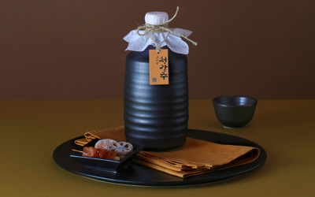

Social

지속적인 후원을 통해,
문화재를 보존하고 만들어 나가도록
국순당은 전통주 대표기업으로서 사회적 책임을 가지고, 지속 가능한 사회공헌 활동을 추진하고 있습니다.
복원된 우리술
이화주
고려시대 이화주의
농후한 맛을 되살린 최고급 탁주
이화주는 국순당이 두 번째로 복원한 우리술입니다.
고려 시대 이화주의 농후한 맛을 되살린 최고급 탁주로
이름의 ‘이화梨花’는 배꽃이 필 무렵에 담그는 데에서
유래했다는 설과 술의 빛깔이 배꽃처럼 희어서 붙여졌다는
설이 함께 전해지고 있습니다.숟가락으로 떠먹을 수 있을 정도로 걸쭉하며 어디에서도 맛볼 수 없는 단맛과 신맛의 조화가 매력적입니다.
- 출처
- 수운잡방, 증보산림경제, 규곤시의방, 한림별곡 제4장, 역주방문, 요록, 주찬
- 복원일
- 2008년 8월
- 원료
- 이화곡(누룩), 백설기
복원 이야기
국순당 이화주는 박선영 연구원이 복원하였습니다.
노란빛이 감도는 다른 막걸리와 달리 쌀로 만든 누룩을 쓴 이화주는 술의 색이 배꽃처럼 하얗습니다.
쌀이 귀했던 시절, 술은 물론 누룩까지 쌀로 만들어야 하는 이화주는 그래서 귀족층이 즐겨 마셨을 것으로 추정됩니다.
우리술을 빚는 누룩 대부분은 원반 모양입니다. 표면적을 넓혀 곰팡이가 고루 잘피도록 하기 위해서입니다. 그런데 문헌에 나온 이화누룩은 동그란 공모양이었습니다. 일반적인 누룩과 다른 이유가 궁금해 누룩을 직사각형, 원기둥, 원반 모양 등으로 다양하게 빚어보았습니다. 하지만 이화 누룩은 접촉면적이 작았던 공모양에서 가장 잘 자랐습니다. 필요한 곰팡이를 알맞게 파울 수 있었던 선조의 지혜를 체험할 수 있었던 부분이었습니다.
송절주
소나무 마디인 송절로 빚은
조선시대 명주

송절주는 국순당이 다섯 번째로 복원한 조선시대 우리술입니다.
소나무 마디인 송절로 빚어 독특한 솔향과 특유의 쌉싸름한 맛이 뛰어납니다. 소나무가 가진 상징적인 뜻으로 옛 선비들이 각별히 즐기던 술이었습니다.
- 출처
- 규합총서, 동의보감, 고사십이집, 임원경제지, 부인필지, 음식디미방, 산림경제, 임원십육지
- 복원일
- 2009년 2월
- 원료
- 쌀, 찹쌀, 누룩, 송절
복원 이야기
국순당 송절주는 권희숙 연구원이 복원하였습니다.
문헌에 나온 그대로 되살린 송절주는 즐기고 마실 수 있는 술이라기에는 맛과 향이 무겁고 진했습니다. 차라리 하루에 한 잔씩 참고 들이켜야 하는 약에 가까운 모습이었습니다. 그래서 지금의 우리가 조금 더 가볍게 즐길 수 있도록 송절주를 다시 빚어보기로 했습니다. 우리 선조가 즐겼던 송절주를 복원하여 그 원형을 되살리는 일은 잊지 않되, 그 명맥이 끊기지 않고 현대에서도 널리 즐겨지길 바랐기 때문입니다.
먼저 송절의 쓴맛이 너무 강하지 않도록 양을 줄였습니다. 또한, 송절을 달이면 나오는 잔액으로 술을 빚기보다 쌀에 그대로 송절을 넣어 발효 중 성분이 추출될 수 있도록 했습니다. 함께 넣은 솔잎은 쓴맛을 줄이고 은은한 솔 향이 술 전체에 배어들게 해 맛과 향이 더욱 풍성한 자금의 송절주가 탄생했습니다.
자주는 국순당이 세 번째로 복원한 우리술입니다.
호초(후추)와 황납(꿀)을 넣어 중탕으로 빚은 고려 시대 명주로 약주의 은은한 맛과 후추가 조화되어 매콤하면서도 시원한 풍미가 독특합니다
- 출처
- 주찬, 산가요록, 고사촬요, 요록, 주방문, 산림경제, 증보산림경제, 민천집설, 고사신서, 고사십이집, 역주방문, 조선무쌍, 의방합편
- 복원일
- 2008년 8월
- 원료
- 꿀, 호초, 쌀, 좋은 맑은술 (좋은 맑은술:산가요록 "향료(香料)" 제법을 복원 제조)
복원 이야기
국순당 자주는 권희숙 연구원이 복원하였습니다.
다 빚은 술을 꿀, 호초와 함께 끓여서 얻는 자주는 어느 정도의 온도에서 얼마나 중탕을 해야 하는지를 설명한 문헌이 없어 복원이 힘들었습니다. 젖은 쌀 한 줌이 밥이 될 때까지가 유일한 단서라 술을 만들기 위해서는 각기 다른 온도와 시간으로조건을 바꾸어 계속 빚어보는 수밖에 없었습니다.
50°C의 온도에서는 아무리 오래 끓여도 젖은 쌀이 밥이 되지 않았습니다. 55°C, 60°C, 65°C 세 번의 실험에서는 세 번 모두 다 쌀이 밥이 되었지만 열이 가해진 정도에 따라 맛이 조금씩 달랐습니다. 70°C 이상으로 온도가 올라가면 알코올이 증발하기 시작해 술의 품질이 떨어졌습니다. 여러 번에 걸친 실험 결과 55°C에서 5시간 정도 중탕했을 경우가 호초의 매콤한 맛이 약주의 은은한 맛과 어우러져 술의 품질이 가장 좋았습니다.
청감주는 국순당이 열여덟 번째로 복원한 조선시대 우리술입니다.
청주를 넣어 빚은 술로 빛깔이 맑고 깨끗하며 단맛이 좋아 맑을 청(淸), 달 감(甘)자를 씁니다. 특히 알코올 도수가 높지 않고 맛이 순해 술을 잘 마시지 못하는 사람들도 술맛을 음미하면서 마시기 편한 술입니다.
- 출처
- 수운잡방, 고사촬요, 증보산림경제, 시의전서, 임원십육지 등
- 복원일
- 2011년 11월
- 원료
- 찹쌀가루, 청주, 누룩 등
복원 이야기

국순당 청감주는 송숙희 연구원이 복원하였습니다.
청감주의 큰 특징 중 하나는 술로 빚는 술이라는 점입니다. 그런데 문헌마다 술로 빚는다는 내용만 설명되어 있을 뿐, 어떤술로 빚는지는 설명이 없었습니다. 재료가 되는 술에 따라 완성된 청감주의 맛과 향이 모두 달랐기 때문에 재료 술을 매번 달리 만들어 처음부터 다시 빚어야 했습니다.
그 과정에서 쓴맛의술, 신맛의 술 등 다양한 맛과 향의 술이 빚어졌습니다. 수많은 술을 빚었다가 버렸습니다. 그러다 결국 순하고 부드러워 술을 잘 마시지 못하는 여성, 노약자들도 술 맛을 음미하면서 마시기 좋았다는 문헌에 딱 맞는 술을 빚는 일에 성공했습니다. 그제야 문헌이 말하는 좋은술이 어떤 술이었는지도 겨우 알 수 있었습니다. 술이라는 재료만으로 수백 가지의 맛과 향을 낼 줄 알았던 우리 선조의 지혜가 놀라웠던 경험이었습니다.
사시통음주
사시사철 빚어
벗들과 통하여 즐겨 마시던 전통주
사시통음주는 국순당이 열아홉 번째로 복원한 조선 시대 우리술입니다.
사시사철 빚어 친구들과 통하며(通) 마셨던(飮) 술로 높은 알코올 도수에도 부드러운 감칠맛이 특징이며, 감칠맛 나는 신맛은 입맛을 당기게 하여 자꾸자꾸 마시고 싶어집니다.
- 출처
- 술만드는 법 (酒作法, 찬자 미상의 1800년도 말엽의 한글 필사본)
- 복원일
- 2012년 5월
- 원료
- 백미, 밀가루
복원 이야기

국순당 사시통음주는 박선영 연구원이 복원하였습니다.
문헌에 따라 빚은 사사통음주는 신맛이 강하고, 발효하여 빚은 다른 술에 비해 도수도 높았습니다.
이상하게 여겨 문헌의 내용을 지키지 않은 것이 있는지 문헌을 읽어 내려간 횟수만 수백 번이고,
혹여 발효과정에서 다른 곰팡이균에 오염이 된 것은 아닌지 살피고 또 살폈습니다. 그렇게 같은 일을 돠출이 하기를 십수번 같은 맛과 향의 술을 열 항아리 넘게 버리고 다시 빚고 나서야, 우리 선조들의 지혜를 깨달았습니다.
비교적 높은 알코올도수와 산도는 잡균의 생성을 막아 술이 쉬이 상하는 것을 막았습니다. 사시사철 마실 수 있는 술은 사시사철 빚을 수 있어야 하고, 두고두고 마실 수 있도록 오래 보관할 수 있어야 했습니다. 현대의 살균기술과 냉장시설이 별도로 없었던 시절, 술을 빚는 방법만으로도 오래 보존할 수 있는 술을 만들어 즐겼던 선조의 탁월한 지혜를 엿볼 수 있는 복원이었습니다.